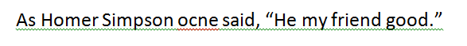
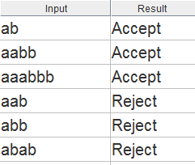
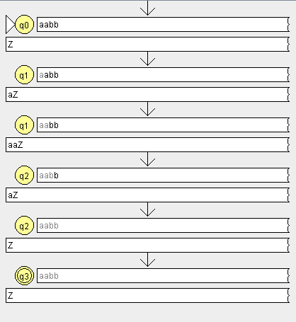
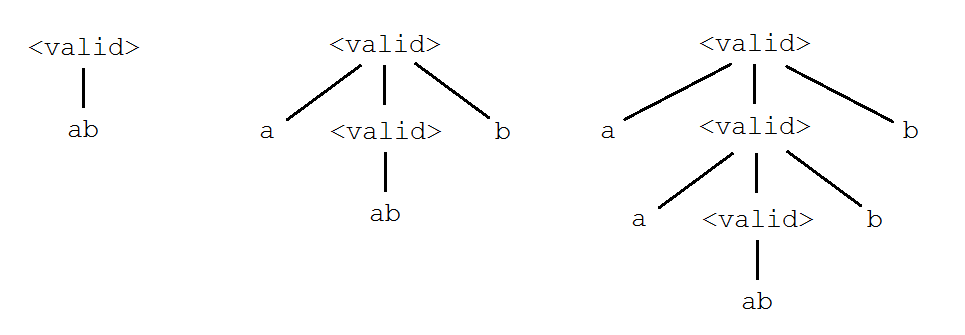

Previously, you learned that
Lexical analysis is somewhat like “spell check” for a programming language. It checks each word (lexeme) to see that it is known (a reserved word or symbol) or that it fits a defined pattern such as the PL’s rules for valid identifiers. If not, there is an error, like the one in red below.

But as the green shows, we all know that spell check alone tells us nothing about the grammar of our writing. In English, the word “syntax” means approximately the same as “grammar” as used in this context. In programming languages, syntax refers to the way that lexemes are combined to create expressions, statements, and other larger chunks of a program.
The rough equivalent of English grammar check is the syntactic analysis of a programming language. You’re probably not surprised to learn that a regular language is not sophisticated enough to express a PL’s syntax. You can’t do it using finite automata or regular expressions. As an example, consider a very simple language: the set of all strings that have one or more $a$ characters, followed by the same number of $b$ characters. Or, in symbolic terms: $L = \lbrace a^nb^n : n > 0 \rbrace$, where $a^n$ represents $n$ repetitions of the character $a$. As simple as it is, this language is not a regular language. You can’t create a finite automata or regular expression that captures it. (Go ahead and try. I’ll wait.)
We need a more powerful formalism to capture this complexity. Once again, we can approach it from the meta-machine perspective or the meta-language perspective. We’ll look briefly at the machine approach, then turn to language for deeper study.
The problem with a finite automaton is that it has no memory. It can change state based only on its current state and the remaining input. It has no information about how it got to its current state, or what input it processed to get there. Its behavior cannot be affected by anything in the past.
A pushdown automaton (PDA) is simply a finite automaton with the addition of a stack for memory. Here is a JFLAP model of a PDA that accepts the language in question.
The transitions now have three-part labels. The first part is to be matched to the remaining input, as before. The second part must be matched to the top symbol on the stack. (The stack is initially empty. JFLAP uses the special Z character as a marker for the bottom of the stack.) If both parts match, the transition is taken, the input symbol is crossed off, the stack is popped, and the symbols in the third part are pushed onto the stack. If the third part contains multiple symbols, the rightmost is pushed first. The Greek letter lambda (λ) represents an empty string.
Here are the results of running the PDA on several inputs.

The following trace shows how the second input above was processed. Each state is shown, along with the remaining input and the contents of the stack.

As before, the JFLAP software can automatically convert the machine model of the automaton to a linguistic model. This model is called a grammar. It consists of a list of rules that define certain symbols. The grammar notation generated by JFLAP is, once again, most useful for theoretical studies of formal languages. So instead, here is a grammar written in a meta-language called Backus-Naur Form (BNF).
<valid> ::= ab
<valid> ::= a <valid> bIn a BNF rule, the symbol ::= means “can be defined as”. The symbol to the left of this operator can be defined as the sequence of symbols on the right. Symbols being defined are always in angle brackets; these are called non-terminal symbols. Other symbols, called terminals, simply represent themselves.
The first rule above says that the non-terminal <valid> can be defined (replaced with, rewritten as) the terminal symbols ab. If we choose that path, we are done, because we have no more non-terminals to process.
Alternatively, we could take the second rule and replace the non-terminal <valid> with the symbols a <valid> b. Here we will need to do more processing, because we still have a non-terminal to work on.
It should be clear that this is a recursive definition, which is frequently the case with BNF. The first rule is the base case; the second rule is the recursive step. Some variations of BNF allow it to be written in one rule, with the pipe symbol meaning “or”.
<valid> ::= ab | a <valid> b(Strictly speaking, there are no spaces between the three symbols in the recursive step, but I have put them there for ease of reading.)
In this toy grammar, there is only one non-terminal. Grammars of realistic complexity (like those for PLs) will have more, with one “root” non-terminal. The root non-terminal is the largest, most complex element being defined: it is the point of the grammar. For a PL, the root non-terminal would represent a valid program in the language.
It is called the “root” non-terminal because it will appear as the root node in all parse trees. At each level below the root of the parse tree, one non-terminal is replaced with one of its possible definitions. Here are parse trees that show how the strings ab, aabb, and aaabbb can be generated from the grammar. In the third case, the non-terminal symbol is replaced with its recursive definition twice: once to produce the second level down, and once to produce the third level down. The third time, it is replaced with the base definition, eliminating the last non-terminal. The leaves of a parse tree are all terminal symbols, which should be read in the order they are visited by the “perimeter walk” used for depth-first tree traversals.

Parsing is the more common term for syntactic analysis.
Turning to implementation of PLs, we do not typically use a grammar to generate valid strings (programs). Instead, we use the grammar to determine whether an input is a valid string (program) or not. If it is, the resulting parse tree is a data structure that supports further processing of the program. The processing can take many forms, including interpretation (on-the-fly simulation), compilation (translation to a different, typically lower-level language), and various kinds of analysis.
The set of languages that can be defined by pushdown automata (or equivalently, by grammars in Backus-Naur form) is called context-free languages. Note that BNF is one of many notations for context-free grammars, and that grammars in other notations may not be context-free.
Yes, there are languages more powerful than the context-free languages, and neither PDA nor BNF can model them. You may be relieved to hear that PLs rarely exceed the complexity of context-free languages, so there is no need to go further for this course.